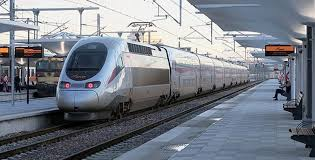
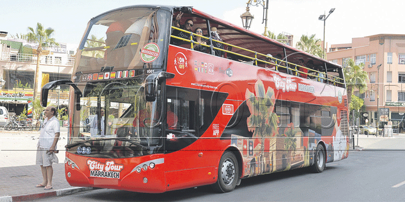
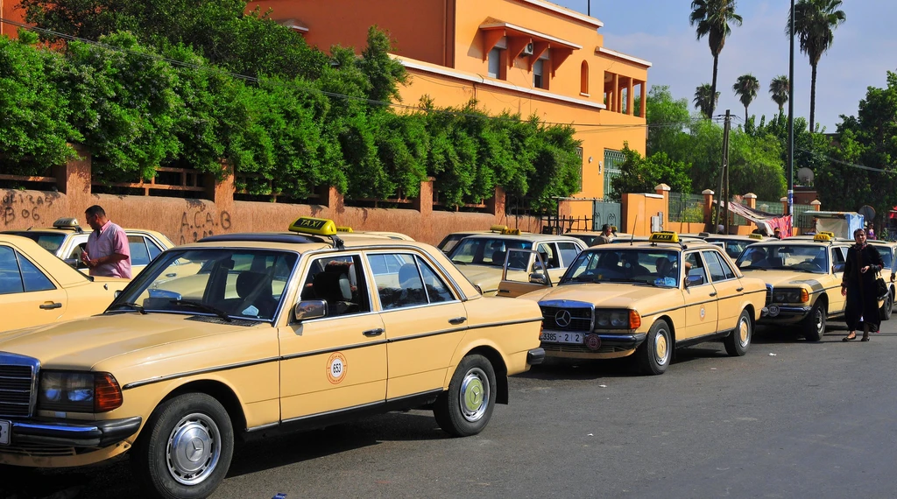
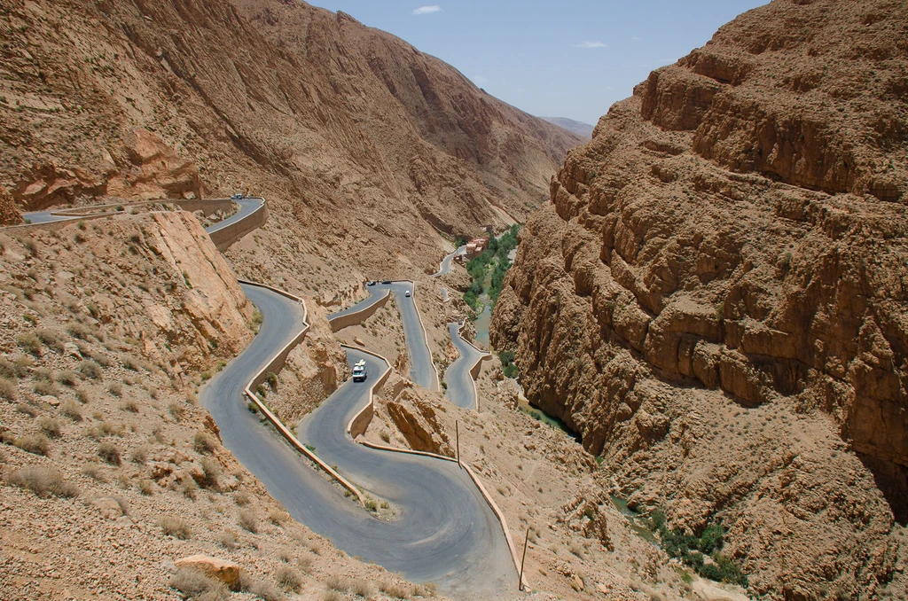
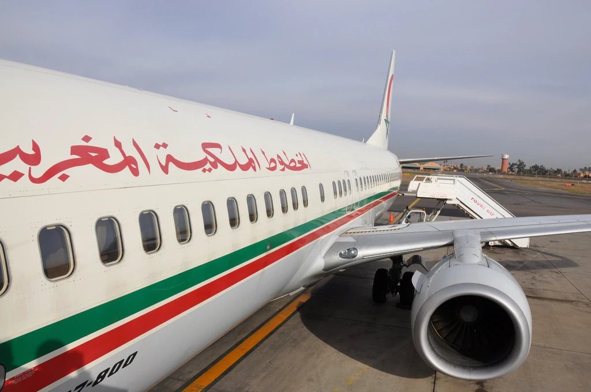
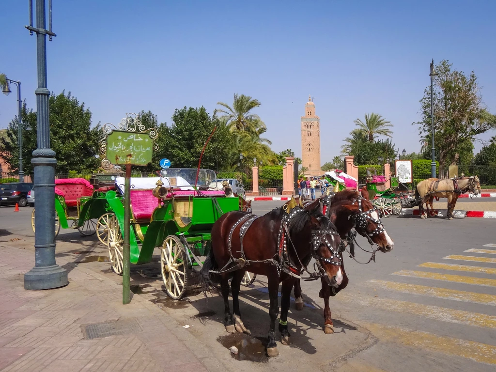
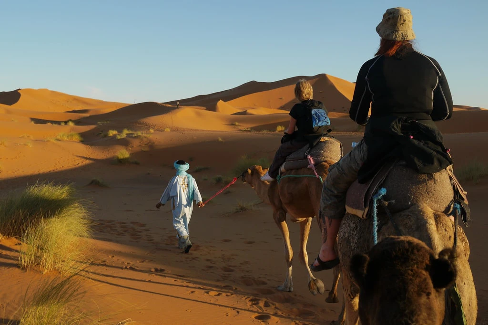

Travelling around Morocco independently isn’t as daunting as it may first appear. Of course, if time is limited or you want to visit a particularly out-of-the-way destination, organised tours could be the best option. Most major cities and towns are very well connected, though, and local routes link most smaller villages and communities. Here’s the lowdown on transport in Morocco to make planning your next trip a breeze.
Railway transport

Developed during the colonial period, the rail network in Morocco is operated by ONCF. The two main routes run between Marrakech and Tangier, passing through Casablanca and Rabat, and from the nation’s capital of Rabat to the easterly city of Oujda, via Fez. There is an interchange between the two lines in the central city of Sidi Kacem.
Service is fairly frequent and punctual, though train travel is often slower than travelling by bus. As a guide, the direct train journey between Marrakech and Tangier takes around nine and a half hours. To travel between Casablanca and Tangier takes approximately four hours and 45 minutes. Travelling west to east, the 459-kilometre journey from Rabat to Oudja is around nine hours long.
Night trains operate on some routes, including Marrakech to Tangier, Tangier to Nador, Casablanca to Nador, and Casablanca to Oujda. Tickets can be reserved for a bed or couchette, or you can take your chances at finding a comfortable and spacious spot in the second-class compartments. Unless you have paid extra to reserve a seat on a daytime train, you will have to sit wherever there is an available seat; this can mean that groups are split up in the crowds.
Buses and minivans

Moroccan bus companies travel both long and short distances, providing a practical and inexpensive (if sometimes cramped, uncomfortable, and time-consuming) way to move around the country. Do be aware that you may need to pay a bit more if travelling with large luggage. Cities and towns generally have a central bus station from where you can obtain schedules and reserve tickets. Services connecting major destinations are often frequent.
Regular buses, used by many locals, have the cheapest fares. It’s often a case of first-come, first-served with regards to seating. The vehicles are generally a little worn (some might say scruffy) and there’s usually no air conditioning. The routes are longer too, with buses meandering through local villages on their journey.
Private companies offer luxury buses with shorter travelling times due to more direct routes. Seats are often assigned. Although a bit more expensive, luxury buses are generally more comfortable because of they have air conditioning. Some even have a TV and may offer other services and facilities.
Travelling by minivan is often an alternative to using buses. Usually departing when full, minivans are more flexible in their pick-up and drop-off points, as well as their departure times. You could arrive at a bus station to find an almost full minivan about to leave, or you could pay for a seat only to wait around for some time, hoping that other passengers materialise. As a plus point, the journey times are usually a bit shorter than buses. Seats are, however, slightly more expensive. If you’re in a hurry, many minivans will let you pay for empty seats so that they depart sooner.
Grand taxis and petit taxis

Grand taxis can be found in most major cities, though they generally have a separate rank away from the main bus station. Typically a beaten up old Mercedes, a grand taxi is another way of travelling long distances in Morocco. It can seat seven people. While you can charter the whole vehicle, which is especially cost effective for groups, it is common for people to book just one seat, similar to a minivan. They often make multiple pick-ups and drop-offs on the way to their final destination. Prices are negotiable when booking the whole vehicle. The driver should not then pick up other passengers on the way, unless you agree. Occasionally, you may take pity on a hitchhiker, for example, and offer them a ride.
Petit taxis are your standard three-passenger taxis that offer private door-to-door services. Unlike grand taxis, however, petit taxis cannot go beyond the city limits. They are found in larger cities and there are often several taxi ranks scattered across the city. Accommodations will usually call and book a taxi for you if requested. Although petit taxis are supposed to use the meters, many drivers still try to refuse (and they can be quite inventive with their reasons of not using it)! In such a case, either find another vehicle or agree on a price before starting the journey.
Private car hire

It’s fairly easy to rent a car in Morocco, and there is a combination of large international companies and smaller local providers offering a range of vehicles to rent. Hiring a car is an ideal way for independent travellers to cover a lot of ground and easily reach places that are a bit more remote. Keep in mind, though, that the twisty and steep mountain roads aren’t for the faint hearted! Other road users can be more erratic than you may be used to at home, and roads aren’t that well-maintained in some areas. Take note: people drive on the right-hand side of the road here.
While some car hire companies may ask to see an international driving license, many accept a full license from your home country. You should always make sure that you have comprehensive insurance. As with many places, people should not drive when drunk and stick to speed limits. Also, police checkpoints are common on Morocco’s roads.
If you don’t feel so confident about navigating Morocco’s roads, or you’re not an experienced driver, another possibility is to rent a car with a driver. This is, naturally, more expensive.
Domestic flights

If time is short and funds are abundant, taking a domestic flight can be a great way to travel longer distances in Morocco. Often the quickest way of getting from A to B, it is also the most expensive option. Do keep in mind that a short flight can be made longer by checking in both yourself and luggage and passing through security checks. Travelling by road between Marrakech and Casablanca, for example, might be no longer of a journey than flying.
Royal Air Maroc (RAM) operates several internal routes. The airline’s base is in Casablanca. Places with domestic airports include Agadir, Beni Mellal, Errachidia, Essaouira, Fez, Guelmim, Laayoune, Marrakech, Nador, Ouarzazate, Oujda, Rabat, Tangier, Tetouan, and Zagora.
Donkeys and horses

Horse-drawn carriages are common in some cities, particularly Marrakech and Meknes. Although these are mainly taken for a pleasurable sightseeing rides, they can also be used as taxis and you’ll see locals hopping in a carriage to get across the city. You need to negotiate the price before the journey starts.
While donkeys are primarily used to transport goods, rather than people, in towns and cities, they are a vital means of transportation in the mountains. Nicknamed the Berber 4×4, donkeys not only provide rides for tourists but are also used by locals to get to areas that have no road links or are otherwise difficult to reach.
Camels

Used by nomadic desert-dwelling people in the past to transport goods, camels weren’t generally used to transport people. Today, camels play a major part in the country’s tourist industry, providing transportation to desert camps and trekking experiences. Although riding a camel can be enjoyed in several areas around Morocco, camels as true (tourist) transportation are typically only found in desert regions.